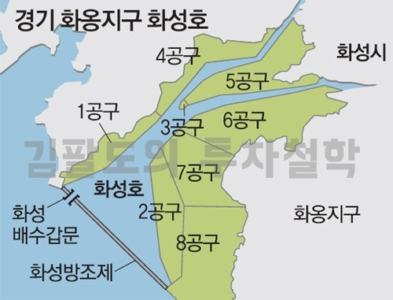
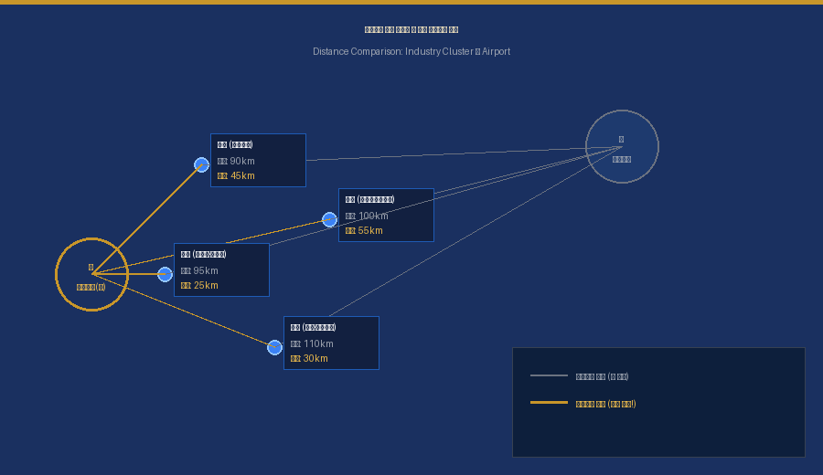
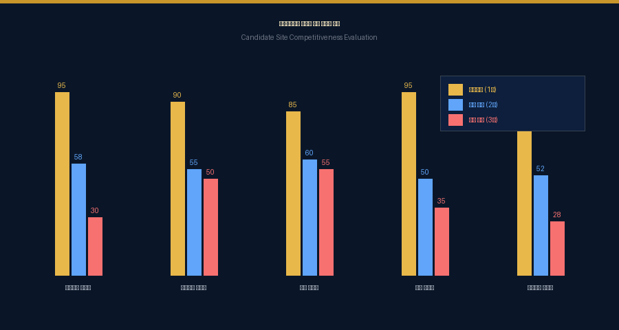
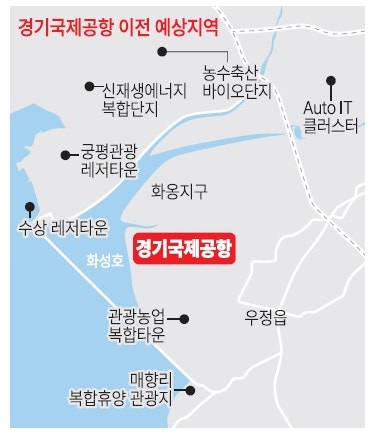
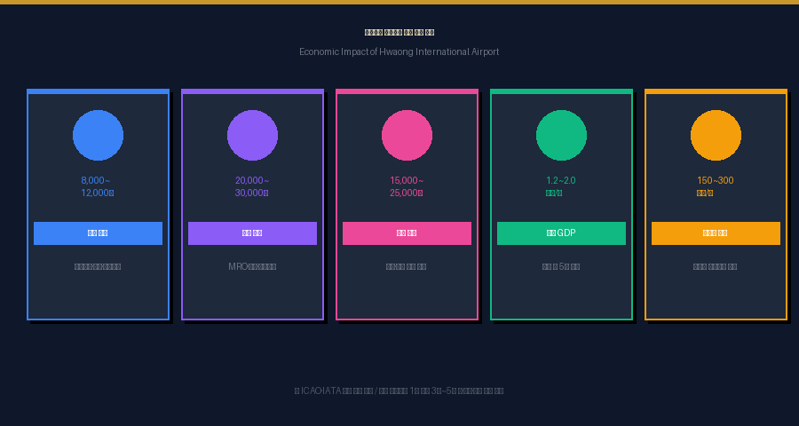
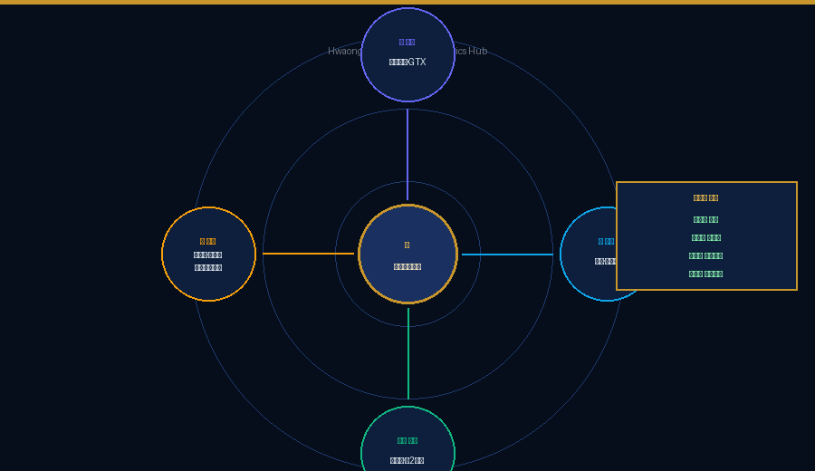
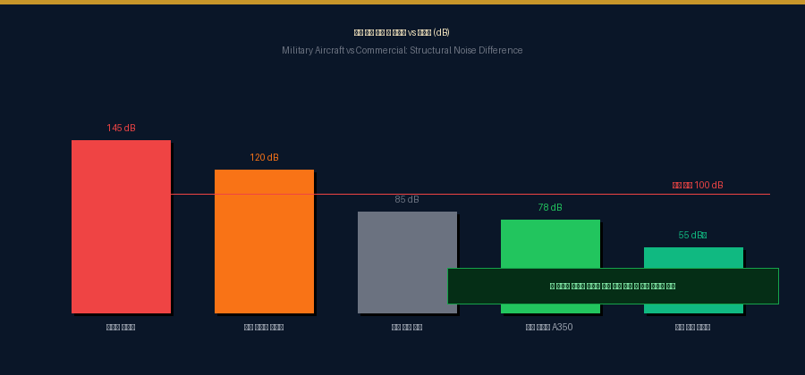
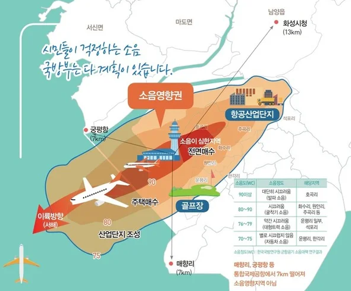
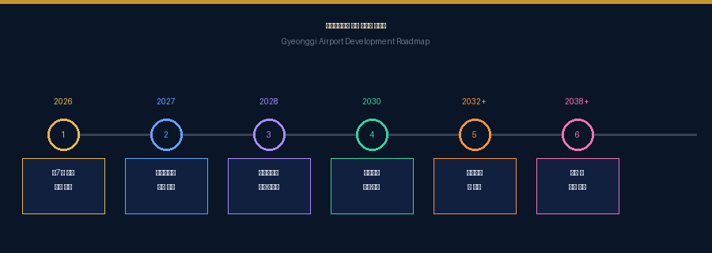

수도권 남부 1,000만 주민의 항공 접근성 개선·
국가 물류 경쟁력 강화·서해안권 균형발전을 위한
화성화옹지구 서부발전협의회의 국가 전략 청원
Hwaseong Hwaong Western Development Council
지난 20여 년간 개발이 정체된 화옹지구의 교통·산업·정주 인프라 불균형 문제를 해결하고, 경기남부 국제공항의 조속한 화옹지구 입지 확정을 추진하기 위해 결성된 비영리 시민 협의회입니다.
화옹지구 현장 여건, 교통 접근성, 산업·환경 영향을 실증적으로 조사·분석하여 정부와 지자체가 합리적 결정을 내릴 수 있도록 공공적 자료를 제작하고 정책 제안서를 제출합니다.
제7차 공항개발 종합계획(2026~2030) 반영, 사전·예비타당성 조사 조기 착수, 관계기관 공동 공론화위원회 구성 등 단계별 실행 로드맵을 제안합니다.
국토교통부, 경기도, 화성시, 평택시, 수원시 등 관계 기관과 생산적·실질적 협의를 통해 지역 간 불균형 해소 및 서해안권 인프라 개선을 지속적으로 추진합니다.
경기도 화성시 서부 해안에 위치한 광역 간척지 기반 지역으로, 수도권 남부와 서해안권의 중심부에 자리한 전략적 요충지입니다. 서해안고속도로·수도권 제2순환고속도로·평택항·당진항 산업축과 인접해 있어, 국제공항·복합물류 허브·남부권 산업 지원거점으로 발전할 가능성이 매우 큰 지역입니다.

6가지 핵심 근거로 보는 화옹지구 국제공항의 필요성
인천국제공항에 사실상 모든 기능이 집중된 현재 구조는 감염병·재난·관제 장애 발생 시 국가 항공망 전체가 마비되는 치명적 취약점을 안고 있습니다. 경기국제공항은 다중 관문체계(Multi-Gateway System)를 구축하는 핵심 보완 공항입니다.
Single Point of Failure
재난 시 전국 항공 마비
다중 허브체계
리스크 분산·회복력 강화
수원·용인·화성·평택에는 삼성전자·SK하이닉스를 중심으로 세계 최대 반도체 메가클러스터가 형성되어 있습니다. 그러나 인천공항까지의 거리·시간·비용이 지나치게 커 물류 경쟁력이 심각하게 저하되고 있습니다.
화성시 동부는 삼성전자와 신도시를 중심으로 급성장했지만, 서부 화옹지구는 20여 년간 개발이 정체되었습니다. 국제공항 건설은 이 구조적 불균형을 해소하는 가장 실효성 높은 국가 인프라 정책입니다.
화옹지구는 광범위한 국유 간척지를 기반으로 하여, 토지 보상비·민원 갈등·이전 문제가 타 후보지 대비 극히 낮습니다. 공항 건설에서 토지 보상은 총사업비의 20~30%를 차지합니다.
화옹지구는 평택항·당진항·서해안 국가산단과 인접하여 항공-해상-도로-철도 4D 복합물류 체계를 구축할 수 있는 대한민국에서 가장 희소한 입지입니다.
2023년 경기도의 「경기 국제공항 유치 및 건설 촉진 조례」 제정과 2024년 경기도 연구용역은 화옹지구가 모든 평가 항목에서 최고점을 받은 압도적 최적지임을 공식 확인했습니다.



ICAO·IATA 분석 기반 경제 파급 효과 추산

지역 내 양질의 일자리·창업 기회 대거 창출
병원·학교·대형마트·문화시설 유입
인천공항 2시간 → 경기공항 10~20분
공항 배후도시 형성 → 토지·주택 가치 30~80% 상승
낙후 간척지 → 국가 전략 국제 비즈니스 도시
청년·전문직 종사자의 귀향·정착 가능
소상공인·자영업 매출 증대·상권 안정화
군용기와 민항기는 소음 구조가 근본적으로 다릅니다

이륙 시 소음이 내륙이 아닌 바다 방향으로 분산되는 구조적 설계. 인천공항·창이공항·간사이공항이 모두 동일 방식 적용.
A350·B787 등 최신 기종은 과거 B747 대비 소음 40~60% 감소. ICAO Chapter 14 기준 충족.
22시~06시 야간 운항 제한 또는 저소음 항공기만 허용하는 국제적 표준 적용.
GPS 기반 정밀 항로로 주거지·습지 상공을 회피하는 소음 최소화 경로 비행 유도.
활주로 주변 100~300m 방음림, 흡음 수목대, 흙제방 조성으로 자연적 소음 차단.


활주로를 서해 방향으로 배치할 경우, 항공기 이륙 시 소음이 민가가 위치한 동측이 아닌 바다 방향으로 분산되어 주민 생활권으로의 소음 유입이 구조적으로 차단됩니다.

2026~2030년 시행될 제7차 공항개발 종합계획에 경기국제공항(화옹지구) 사업을 명시적으로 포함하여 국가 계획으로 공식화할 것을 촉구합니다.
화옹지구 국제공항의 사전타당성 조사 및 예비타당성 조사를 조속히 착수하여 경제성·실현 가능성을 공식 검토할 것을 요청합니다.
경기도·국토부·환경부·화성시·전문가·시민사회가 참여하는 공론화위원회를 구성하여 투명하고 민주적인 정책 결정 과정을 마련할 것을 요청합니다.
화성 서부 지역의 생활 SOC 확충, 균형발전 패키지를 국제공항 추진과 동시에 마련하여 지역 주민의 삶의 질을 선제적으로 향상시킬 것을 촉구합니다.
본 청원서는 2026년 3월 21일 국토교통부 장관(김윤덕)과 경기도 지사(김동연)에게 정식 제출되었습니다.
본 청원은 단순한 지역 민원이 아닌, 대한민국 국가경쟁력 강화의 핵심 전략 과제로서 조속한 검토와 결정을 요청합니다.
화옹지구 국제공항의 조속한 추진을 위해 시민 여러분의 지지가 필요합니다
Hwaseong Hwaong Western Development Council (HHWSDC)
⚠️ 본 협의회는 비영리 시민 단체로, 화성 서부 지역 균형발전과 경기국제공항 화옹지구 유치를 위해 활동합니다.